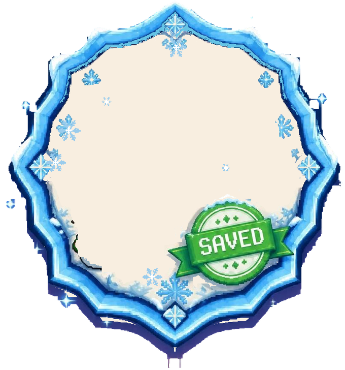
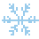
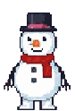
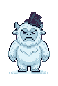

Merrily on High

No badge in the address. Pick one:
Scanned from an FM-1. The sound link will make badges verified later; this one is a challenge until then.
Fonts: Barlow Semi Condensed (SIL OFL 1.1).